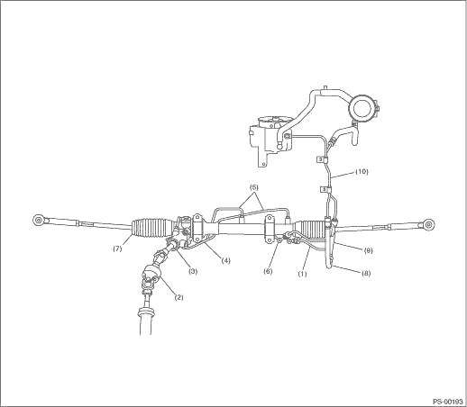
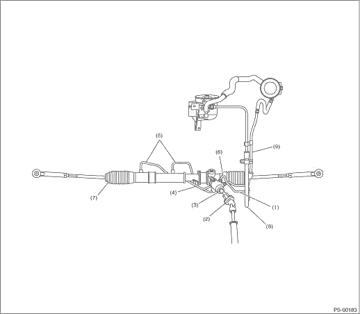

|
Trouble |
Possible cause |
Corrective action |
|
• Steering effort is heavy in all ranges. • Steering effort is heavy at stand still. • Steering wheel vibrates when turning. |
1. Pulley belt • Unequal length of pulley belts • Contact with oil or grease • Looseness or damage of the pulley belt • Poor uniformity of the pulley belt cross section • Pulley belt is touching the pulley bottom. • Poor revolution of pulleys (except oil pump pulley) • Poor revolution of oil pump pulley |
Adjust or replace. |
|
2. Tire and wheel • Improper tires out of specifications • Improper wheels out of specification • Tires not properly inflated *1 |
Replace or reinflate. | |
|
3. Fluid • Low fluid level • Air entry in fluid • Dust entry in fluid • Fluid deterioration • Inadequate warm-up of fluid *2 |
Refill, bleed air, replace or instruct customer. | |
|
4. Idle speed • Low idle speed • Excessive drop of idle speed at start or when turning the steering wheel *3 |
Adjust or instruct customer. | |
|
5. Measure the hydraulic pressure. |
Replace the problem parts. | |
|
6. Measure the steering wheel effort. |
Adjust or replace. | |
|
• Vehicle leads to one side or the other. • Returning force of steering wheel to center is poor. • Steering wheel vibrates when turning. |
1. Fluid line • Folded hose • Flattened pipe |
Correct or replace. |
|
2. Tire and wheel • Flat tire • Mixed use of different tires • Mixed use of different wheels • Uneven tire wear • Unequal tread remaining • Unequal pressure of tire |
Correct or replace. | |
|
3. Front alignment • Improper or unequal caster • Improper or unequal toe-in • Loose suspension connections |
Adjust or retighten. | |
|
4. Others • Damaged joint assembly • Unbalanced height • Unbalanced weight |
Replace, adjust or instruct customer. | |
|
5. Measure the steering wheel effort. |
Adjust or replace. |

*1 If the tires or wheels are wider than standard, the load to power steering system is increased. Accordingly, in a condition where the fluid has not yet warmed up, the relief valve may work before reaching the maximum turning angle. In this case, steering effort may be heavy. When the measured hydraulic pressure is normal, there is no problem.
*2 In cold weather, steering effort may be heavy due to increased flow resistance of cold fluid. After warming-up engine, turn the steering wheel from stop to stop several times to warm-up the fluid. If steering effort reduces normally, the power steering is functioning normally.
*3 In cold weather or with insufficient warm-up of the engine, steering effort may be heavy due to excessive drop of idling when turning the steering wheel. In this case, it is recommended to start the vehicle by increasing engine speed a little higher than usual. If steering effort reduces normally, the power steering is functioning normally.
CAUTION:
Do not keep the relief valve operating for 5 seconds or more at a time or the inner parts of the oil pump may be damaged due to rapid increase of fluid temperature.
NOTE:
• A screeching noise may be heard immediately after the engine start in extremely cold conditions. In this case, if the noise goes away when the vehicle warms up, the system is functioning normally. This is due to the fluid characteristics in extremely cold condition.
• The oil pump normally makes a small whining noise due to its mechanism. Even if a noise is heard when steering wheel is turned at stand still, there is no abnormal function in the system provided that the noise eliminates when the vehicle is driving.
• When turning the steering wheel with the brake applied when the vehicle is parked, a screeching noise may be generated by the brake disc and pads. This is not a fault in the steering system.
• There may be a small vibration around the steering devices when turning the steering wheel at standstill, even though the component parts are operating properly. Hydraulic systems are likely to generate this kind of vibration as well as working noise and fluid noise because of combined conditions, i.e., road surface and tire surface, engine speed and turning speed of the steering wheel, fluid temperature and braking conditions. These conditions do not indicate a problem in the system. Confirm vibration for an AT model, by applying the parking brake on a concrete surface, shifting into the “D” range, and turning the steering wheel repeatedly from slow to rapid, step by step.
|
Trouble |
Possible cause |
Corrective action |
|
Hiss noise (continuous) While engine is running. |
The relief valve emits an operating sound when steering wheel is completely turned in either direction. (Do not keep this condition for 5 seconds or more.) |
Normal |
|
Relief valve emits an operating sound when steering wheel is not turned. This means that the relief valve is defective. |
Replace the oil pump. | |
|
Rattling noise (intermittent) While engine is running. |
Interference with adjacent parts |
Check the clearance. Correct if necessary.
|
|
Loosened attachment of the oil pump, reservoir tank, pump bracket, gearbox or crossmember |
Retighten | |
|
Loose oil pump pulley or other pulley(s) |
Retighten | |
|
Looseness of the linkage, play in the steering, improper tightening (looseness) of suspension joints or steering column |
Retighten or replace. | |
|
Sound generates from the inside of gearbox or oil pump. |
Replace faulty parts in the gearbox or oil pump. | |
|
Knocking When turning steering wheel in both directions with small angle repeatedly at engine ON or OFF. |
Excessive backlash Loosened lock nut for adjusting backlash |
Adjust and retighten. |
|
Insufficient tightening or play in the tie-rod or tie-rod end |
Retighten or replace. | |
|
Grinding noise (continuous) While engine is running. |
Air in vane pump |
• Inspect and retighten the fluid line connection. • Refill the fluid and vent air. |
|
Vane pump seizing |
Replace the oil pump. | |
|
Oil pump pulley bearing seized |
Replace the oil pump. | |
|
Folded hose, flattened pipe |
Replace | |
|
Squeal, squeak (intermittent or continuous) While engine is running. |
• Improper adjustment of pulley belt • Damaged or over tensioned pulley belt • Unequal length of pulley belts |
Adjust or replace. (Replace two belts as a set.) |
|
Runout or dirty V-groove surface of oil pump pulley |
Clean or replace. | |
|
Sizzling noise (continuous) While engine is running. |
Fluid aeration |
• Fix the faulty part causing aeration. • Replace the fluid and vent air. |
|
Damaged pipe of gearbox |
Replace the pipe. | |
|
• Faulty inside of hose or pipe • Flattened hose or pipe |
Correct or replace. | |
|
Problem inside the reservoir tank |
Replace | |
|
Missing reservoir tank cap |
Install cap. | |
|
Whistle (continuous) While engine is running. |
Faulty pipe of gearbox or faulty hose |
Replace the faulty parts of the gearbox or the hose. |
|
Whine or growl (intermittent or continuous) While engine is running with/without steering turned. |
Looseness of oil pump, oil pump bracket attachment |
Retighten |
|
Fault inside of oil pump or hose |
Replace the oil pump or hose, if the noise can be heard when vehicle is running as well as being stopped. | |
|
Torque converter growl, air conditioner compression growl |
Remove the power steering pulley belt and check. | |
|
Grinding noise (continuous) While engine is running with the steering turned. |
Fault inside of gearbox |
Replace the faulty parts of gearbox. |
|
Faulty steering shaft bearing |
Apply grease or replace. | |
|
Occurs when turning the steering wheel with brakes (service or parking) applied. |
If the noise goes away when brake is released, it is normal. | |
|
Vibration While engine is running with/without steering turned. |
Engine speed is too low. |
Adjust, and notify customer. |
|
Air in vane pump |
• Repair faulty part • Vent air. | |
|
Damaged valve in oil pump or gearbox |
Replace the faulty parts in gearbox and oil pump. | |
|
Excessive play in steering, looseness of suspension parts |
Retighten |
2. MEASUREMENT OF STEERING EFFORT
| STEP | CHECK | YES | NO |
|
1) Stop the vehicle on paved road. 2) Start the engine. 3) Run the engine at idle. 4) Install a spring scale on the steering wheel. 5) Pull the spring scale at a right angle to the steering wheel, and measure both right and left steering wheel efforts. NOTE: When turning the steering more quickly than necessary from one direction to the other at an engine speed of 2,000 rpm or more, steering effort may be heavy. This is caused by flow characteristic of the fluid in the oil pump and is not a defect. |
Is the steering effort less than 29.4 N (3.0 kgf, 6.6 lbf)? |
|
Adjust the backlash. |
|
Is the steering effort less than 314 N (32 kgf, 71 lbf)? |
|
Perform the adjustment. |
|
|
Is the steering effort less than 2.26 N (0.23 kgf, 0.51 lbf)? |
|
Check, adjust and replace if necessary. |
|
|
Is the steering force difference in the left and right directions less than 1.08 N (0.11 kgf, 0.24 lbf)? |
|
Check, adjust and replace if necessary. |
|
|
Is the swing torque of the universal joint less than 7.3 N (0.74 kgf, 1.64 lbf)? |
|
Replace with a new part. |
|
|
Is the swing torque of the universal joint less than 7.3 N (0.74 kgf, 1.64 lbf)? |
|
Replace with a new part. |
|
|
Does the front wheels have unsteady revolution or rattling, or does the brakes drag? |
Inspect, readjust and replace if necessary. |
|
|
|
Is there any unsteady revolution or rattling of suspension tie-rod ends? |
Inspect and replace if necessary. |
|
|
|
Is there any unsteady revolution or rattling of suspension ball joints? |
Inspect and replace if necessary. |
|
|
|
Is the rotating resistance of steering gearbox less than 9.33 N (0.95 kgf, 2.09 lbf)? Is the difference between right and left sides less than 20%? |
|
Readjust the backlash, and if ineffective, replace the faulty parts. |
|
|
Is the sliding resistance of steering gearbox less than 400 N (41 kgf, 90 lbf)? Is the difference between the right and left sliding resistances less than 20%? |
Steering effort is normal. |
Readjust the backlash, and if ineffective, replace the faulty parts. |
The table below lists various clearances that must be correctly adjusted to ensure the normal vehicle operation without interference noise, or any other faults.
|
Location |
Allowable minimum limit mm (in) |
|
(1) Crossmember to pipe |
5 (0.20) |
|
(2) DOJ to shaft or joint |
14 (0.55) |
|
(3) DOJ to valve housing |
11 (0.43) |
|
(4) Pipe to pipe |
2 (0.08) |
|
(5) Stabilizer to pipe |
5 (0.20) |
|
(6) Exhaust pipe to pipe |
11 (0.43) |
|
(7) Exhaust pipe to gear box bolt |
15 (0.59) |
|
(8) Side frame to hose A and B |
10 (0.39) |
|
(9) Cruise control pump — Hoses A and B |
15 (0.59) |
|
(10) Pipe portion of hose A to pipe portion of hose B |
1.5 (0.059) |
• LHD model

• RHD model
